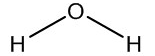
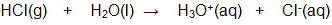

Unit 4: Solutions and Solubility
Activity 2: It’s a Mixing Thing
Content
Journal

|
As you are reading through this activity, keep track and take note of the bold-faced terms and their definitions. Include your own understanding of these terms in your notes. Your teacher may ask you to submit your journal at a later date. |
|---|
Nature of Solutions
Pure substances and mixtures are two major groups of matter. Pure substances consist of only of one type of element or compound. Copper wire is a pure substance because it is only made up of one type of element, copper. Dry ice is a pure substance because it is only made up of a solid form of carbon dioxide. Pure substances have their own unique physical and chemical properties.Mixtures, on the other hand, consist of a physical combination of substances. Air is a mixture of a variety of gases including, nitrogen, carbon dioxide, oxygen as well as other gases in lesser amounts. Water coming out of a drinking fountain is a mixture. Municipal drinking water and well water, for that matter, contain ions such as calcium and magnesium, as well as oxygen gas. Fish surviving in water is evidence of the presence of dissolved oxygen gas in water. A fish’s gills remove the oxygen mixed in the water and release carbon dioxide back into the water. Vinegar is a mixture of acetic acid and water.
Solutions are made up of at least two components. Liquid solutions are usually formed when a gas, a liquid or a solid are mixed with a liquid, called the solvent. The substance being mixed into the liquid, to produce a solution, is called the solute.
SolubilityA miscible liquid substance is one that is able to mix with another liquid to produce a solution. For example, vinegar and water are miscible. Immiscible liquids are those that do not mix together to produce a solution. For example, oil and water do not mix, they remain separate. Gases and solids which mix in with a liquid to produce a solution are considered to be soluble. For example, ammonia gas and sodium chloride are soluble in water. Under certain physical conditions, the maximum amount of a solid or liquid solute that can be dissolved in a certain amount of solvent is referred to as its solubility. For example, the solubility of sodium chloride in 100 g of water at a temperature of 20°C is 36 g. The solubility of ammonia gas in 100 g of water at a temperature of 20°C is 56 g. |  |
 Check Your Understanding
Check Your Understanding
A saturated solution occurs when the solute reaches its limit of solubility. Any sodium chloride that is added to a saturated solution is deemed to be in excess and will not dissolve in the solution. The undissolved solute in a solution is called a precipitate.
Check Your Understanding
- Referring back to the solubility graph, how much precipitate of ammonium chloride, NH4Cl, would form if the saturated solution cooled from 90°C to 50°C?
 Answer
Answer
A solution that contains a solute which has exceeded its solubility limit is a special case. It is called a supersaturated solution. For example, a supersaturated solution containing sodium acetate is prepared by cooling a saturated solution or by some degree of evaporation. The supersaturated solution is an unstable condition and any disturbance such as jarring it or adding a tiny crystal will precipitate out the solute. Crystallization resulting from a supersaturated solution can be dramatic at times.
 | Watch the videoclip titled Sodium Acetate Stalagmites but please be aware, that, depending on your Internet connection speed, all clips on this page may take a few minutes to download. You can always continue reading the remainder of this page while you wait. |
|---|
An unsaturated solution is when the solute’s limit of solubility has not been reached. At a temperature of 20°C, a solution containing 30 g of sodium chloride and 100 g of water is an unsaturated solution.
The Unique Properties of Water as a Solvent and Formation of a Solution
The formation of a solution relies significantly on the forces of attraction and repulsion between the solute and the solvent. Water is known as the universal solvent because it is capable of dissolving a wide variety of substances. This unique ability is due to its polarity. This polarity is the result of its structure and the distribution of the charges within the molecule. The structure of the water molecule is as follows:

The area surrounding the oxygen atom, in the water molecule has a partial negative charge and the area surrounding each hydrogen atom has a partial positive charge. The combination of these partial charges and the shape of the molecule contribute to the unequal distribution of the charges resulting in a polar molecule. Water is a polar solvent and any of its solutions are known as aqueous solutions.
Water has the ability to dissolve polar molecular substances through intermolecular dipole interactions. A popular saying is “like dissolves like”.
In cases where the solute molecule is a polar molecule containing nitrogen, oxygen or fluorine, intermolecular forces of attraction between the water molecule and the other molecule are known as hydrogen bonding.
| Watch the interactive simulation Hydrogen Bonding Between Water Molecules. Please be aware, that, depending on your Internet connection speed, all clips on this page may take a few minutes to download. You can always continue reading the remainder of this page while you wait. |
|---|
Some polar molecules will react with water in a special way as to produce ions. When hydrogen chloride is mixed with water, an ionization reaction occurs. An example of this is as follows:

An hydronium ion and chloride ion are produced in this reaction.
| Watch the interactive simulation An HCl collides with a water molecule. Please be aware, that, depending on your Internet connection speed, all clips on this page may take a few minutes to download. |
|---|
This is a disclaimer. External Resources will open in a new window. Not responsible for external content.
Unless otherwise indicated, all images in this Activity are from the public domain or are © clipart.com or Microsoft clipart and are used with permission.